Department of Statistical Sciences, University of Cape Town
Spatial Point Pattern
Background, Definition, Application Areas and SPP Data Types
Background, Definition
A ‘spatial point process’ is a stochastic process in which we observe spatial locations of some things or events of interest within a bounded region A.
The locations of the events generated by a point process in the area of study A will be called a point pattern.
The spatial arrangement of points is the main focus of investigation.
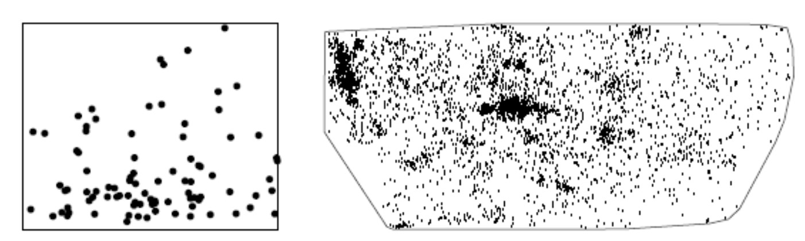
Ref: [3] page 3. Figure 1.1
R Packages necessary
R code
# Core spatial data handling and mapslibrary(sf)library(terra)library(tmap)library(leaflet)library(dplyr)# Spatial dependence and spatial regressionlibrary(spdep)library(spatialreg)# Spatial point patternslibrary(spatstat.geom)library(spatstat.explore)library(spatstat.model)library(deldir)
Application Areas
Examples include:
the locations of trees in a forest, the spatial distribution of the trees, competition or coordination between different species of vegetation
gold deposits mapped in a geological survey,
stars in a star cluster,
road accidents,
earthquake epicentres,
mobile phone calls,
facility locations,
animal sightings,
cases of a rare disease, are they clustered, reasons why,
Ref: https://www.constellation-guide.com/constellation-list/ara-constellation/ Ara was one of the 48 Greek constellations listed by the astronomer Claudius Ptolemy in the 2nd century. Ara contains two stars brighter than magnitude 3.00 and three stars located within 10 parsecs (32.6 light years) of Earth.
library(sf)RSA_roads ="C:/Users/01438475/OneDrive - University of Cape Town/ASDA/DataSets/zafrds8ff5a/ZAF_roads.shp"|>st_read() |>st_transform(4326)
Reading layer `ZAF_roads' from data source
`C:\Users\01438475\OneDrive - University of Cape Town\ASDA\DataSets\zafrds8ff5a\ZAF_roads.shp'
using driver `ESRI Shapefile'
Simple feature collection with 5559 features and 5 fields
Geometry type: MULTILINESTRING
Dimension: XY
Bounding box: xmin: 16.48784 ymin: -34.82747 xmax: 32.85267 ymax: -22.17693
Geodetic CRS: WGS 84
R code
RSA_biome ="C:/Users/01438475/OneDrive - University of Cape Town/ASDA/DataSets/rsabiome4xkhi/RSA_biome.shp"|>st_read() |>st_transform(4326)
Reading layer `RSA_biome' from data source
`C:\Users\01438475\OneDrive - University of Cape Town\ASDA\DataSets\rsabiome4xkhi\RSA_biome.shp'
using driver `ESRI Shapefile'
Simple feature collection with 3127 features and 1 field
Geometry type: POLYGON
Dimension: XY
Bounding box: xmin: 16.45296 ymin: -34.8336 xmax: 32.8928 ymax: -22.12583
Geodetic CRS: Hartebeesthoek94
R code
clinics_sf ="C:/Users/01438475/OneDrive - University of Cape Town/ASDA/DataSets/Clinics/SL_CLNC.shp"|>st_read() |>st_transform(4326)
Reading layer `SL_CLNC' from data source
`C:\Users\01438475\OneDrive - University of Cape Town\ASDA\DataSets\Clinics\SL_CLNC.shp'
using driver `ESRI Shapefile'
Simple feature collection with 149 features and 5 fields
Geometry type: POINT
Dimension: XY
Bounding box: xmin: 18.34268 ymin: -34.19491 xmax: 18.90847 ymax: -33.51262
Geodetic CRS: WGS 84
R code
ct.wards_sf <-"C:/Users/01438475/OneDrive - University of Cape Town/ASDA/DataSets/sa/CPT/electoral wards for cpt.shp"|>st_read(quiet =TRUE) |>st_set_crs(4326)st_crs(ct.wards_sf)
Coordinate Reference System:
User input: EPSG:4326
wkt:
GEOGCRS["WGS 84",
ENSEMBLE["World Geodetic System 1984 ensemble",
MEMBER["World Geodetic System 1984 (Transit)"],
MEMBER["World Geodetic System 1984 (G730)"],
MEMBER["World Geodetic System 1984 (G873)"],
MEMBER["World Geodetic System 1984 (G1150)"],
MEMBER["World Geodetic System 1984 (G1674)"],
MEMBER["World Geodetic System 1984 (G1762)"],
MEMBER["World Geodetic System 1984 (G2139)"],
MEMBER["World Geodetic System 1984 (G2296)"],
ELLIPSOID["WGS 84",6378137,298.257223563,
LENGTHUNIT["metre",1]],
ENSEMBLEACCURACY[2.0]],
PRIMEM["Greenwich",0,
ANGLEUNIT["degree",0.0174532925199433]],
CS[ellipsoidal,2],
AXIS["geodetic latitude (Lat)",north,
ORDER[1],
ANGLEUNIT["degree",0.0174532925199433]],
AXIS["geodetic longitude (Lon)",east,
ORDER[2],
ANGLEUNIT["degree",0.0174532925199433]],
USAGE[
SCOPE["Horizontal component of 3D system."],
AREA["World."],
BBOX[-90,-180,90,180]],
ID["EPSG",4326]]
R code
st_crs(clinics_sf)
Coordinate Reference System:
User input: EPSG:4326
wkt:
GEOGCRS["WGS 84",
ENSEMBLE["World Geodetic System 1984 ensemble",
MEMBER["World Geodetic System 1984 (Transit)"],
MEMBER["World Geodetic System 1984 (G730)"],
MEMBER["World Geodetic System 1984 (G873)"],
MEMBER["World Geodetic System 1984 (G1150)"],
MEMBER["World Geodetic System 1984 (G1674)"],
MEMBER["World Geodetic System 1984 (G1762)"],
MEMBER["World Geodetic System 1984 (G2139)"],
MEMBER["World Geodetic System 1984 (G2296)"],
ELLIPSOID["WGS 84",6378137,298.257223563,
LENGTHUNIT["metre",1]],
ENSEMBLEACCURACY[2.0]],
PRIMEM["Greenwich",0,
ANGLEUNIT["degree",0.0174532925199433]],
CS[ellipsoidal,2],
AXIS["geodetic latitude (Lat)",north,
ORDER[1],
ANGLEUNIT["degree",0.0174532925199433]],
AXIS["geodetic longitude (Lon)",east,
ORDER[2],
ANGLEUNIT["degree",0.0174532925199433]],
USAGE[
SCOPE["Horizontal component of 3D system."],
AREA["World."],
BBOX[-90,-180,90,180]],
ID["EPSG",4326]]
R code
class(clinics_sf)
[1] "sf" "data.frame"
R code
summary(clinics_sf)
LCTN ATHY NAME CLASS
Length:149 Length:149 Length:149 Length:149
Class :character Class :character Class :character Class :character
Mode :character Mode :character Mode :character Mode :character
RGN geometry
Length:149 POINT :149
Class :character epsg:4326 : 0
Mode :character +proj=long...: 0
Example 5: Fluorspar
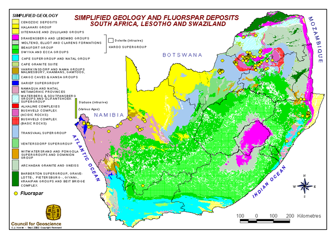
Example 6: Public Electricity Lighting - from .shp file
Reading layer `Electricity_Public_Lighting' from data source
`C:\Users\01438475\AppData\Local\Temp\Rtmp0oRBZR\Electricity_Public_Lighting.shp'
using driver `ESRI Shapefile'
Simple feature collection with 234510 features and 7 fields
Geometry type: POINT
Dimension: XY
Bounding box: xmin: 2039415 ymin: -4057774 xmax: 2105203 ymax: -3962912
Projected CRS: WGS 84 / Pseudo-Mercator
R code
st_crs(electricity)
Coordinate Reference System:
User input: EPSG:4326
wkt:
GEOGCRS["WGS 84",
ENSEMBLE["World Geodetic System 1984 ensemble",
MEMBER["World Geodetic System 1984 (Transit)"],
MEMBER["World Geodetic System 1984 (G730)"],
MEMBER["World Geodetic System 1984 (G873)"],
MEMBER["World Geodetic System 1984 (G1150)"],
MEMBER["World Geodetic System 1984 (G1674)"],
MEMBER["World Geodetic System 1984 (G1762)"],
MEMBER["World Geodetic System 1984 (G2139)"],
MEMBER["World Geodetic System 1984 (G2296)"],
ELLIPSOID["WGS 84",6378137,298.257223563,
LENGTHUNIT["metre",1]],
ENSEMBLEACCURACY[2.0]],
PRIMEM["Greenwich",0,
ANGLEUNIT["degree",0.0174532925199433]],
CS[ellipsoidal,2],
AXIS["geodetic latitude (Lat)",north,
ORDER[1],
ANGLEUNIT["degree",0.0174532925199433]],
AXIS["geodetic longitude (Lon)",east,
ORDER[2],
ANGLEUNIT["degree",0.0174532925199433]],
USAGE[
SCOPE["Horizontal component of 3D system."],
AREA["World."],
BBOX[-90,-180,90,180]],
ID["EPSG",4326]]
R code
class(electricity)
[1] "sf" "data.frame"
R code
bbox <-st_bbox(c(xmin =18.448, ymin =-33.987, xmax =18.482, ymax =-33.981), crs =st_crs(electricity))# Convert bbox to an sf polygonbbox_sf <-st_as_sfc(bbox)# Subset features that intersect with the bounding boxelectricity_subset <-st_intersection(electricity, bbox_sf)library(tmap)tmap_mode("plot")tm_shape(electricity_subset)+tm_dots()+tm_basemap("Esri.WorldStreetMap")
Reading layer `SL_TCT_PR_OS_PRKN' from data source
`https://raw.githubusercontent.com/SebnemEr/datasetsforteaching/main/On_Street_Parking.geojson'
using driver `GeoJSON'
Simple feature collection with 43122 features and 3 fields
Geometry type: POINT
Dimension: XY
Bounding box: xmin: 18.32217 ymin: -34.35718 xmax: 18.87689 ymax: -33.50908
Geodetic CRS: WGS 84
R code
# we can subset this with a ward in CoCTonstreetparking_subset =st_intersection(onstreetparking, ct.wards_sf[ct.wards_sf$WARDNO==57,])tmap_mode("plot")tm_shape(onstreetparking_subset)+tm_dots()+tm_basemap("Esri.WorldStreetMap")
We have an event of interest (crime, trees, animals…etc.)
Point patterns are the locations of these events {\(𝒔_𝑖\) }
Key difference from other spatial data: All points are known mapped pattern Selection bias
Spatial point pattern types
Classic point pattern analysis examines the spatial location/arrangement of events represented as points on an isotropic plane, where distances are measured using straight-line (Euclidean) distance. Isotropy of a point process, defined as invariance of the distribution under rotation (Greek isos (equal) and tropos (way)), is often assumed in spatial statistics. In contrast, anisotropy occurs when spatial processes exhibit directionality, the process varies according to direction, often due to environmental factors such as prevailing winds, river flow, or steep slopes, causing interactions to depend on direction rather than distance alone (Illian et al., 2008; Haase, 2001; Rajala et al., 2022):
Click to learn more about isotropy
An isotropic point process has the same statistical properties after rotation.
Isotropy is a concept analogous to stationarity. Rather than considering translations of the point pattern, isotropy considers rotations about the origin. A point pattern is isotropic if its statistical properties remain unchanged regardless of the direction from which it is viewed.
In the planar case, a rotation is described by an angle \(\theta \in [0^\circ,360^\circ]\). If
\[
Z(s_1,s_2)
\]
is a point in \(\mathbb{R}^2\) with coordinates \(s_1\) and \(s_2\), then rotating the point by an angle \(\theta\) about the origin gives the new coordinates
has the same probability distribution as the original point process for every rotation angle \(\theta\). Notice that we are not asking whether the points end up in the same places, they won’t. Instead, we ask whether the pattern looks statistically the same.
Isotropy refers to the distribution of the entire point pattern remaining unchanged under such rotations, not to the orientation of individual points.
Point pattern analysis can be classified according to the types of events being analysed:
(a) Univariate point patterns. In the simplest case, all points represent the same type of event and differ only in their spatial location. The objective is to determine whether the events are randomly distributed, clustered, or regularly spaced. This is known as univariate point pattern analysis.
Suppose we map the locations of bicycle thefts in a city over one year. We may ask whether the thefts are randomly distributed, concentrated in hotspots, or evenly spaced across the city.
(b) Bivariate point patterns. When two different types of events are present, the focus is on their spatial relationship. For example, we may ask whether two plant species occur independently, whether one species tends to occur near the other, or whether supermarkets and liquor stores; airbnbs and hotels are co-located or spatially separated. These questions are addressed using bivariate point pattern analysis.
A public health researcher may investigate whether fast-food restaurants tend to be located near schools, or whether the two types of locations are spatially independent.
(c) Multivariate point patterns. If there are more than two event types, the analysis becomes multivariate, allowing the investigation of spatial relationships among multiple categories of objects simultaneously.
Marked point patterns
In many applications, points are associated with additional information known as marks. Marks are attributes attached to each event and may be either qualitative (categorical) or quantitative (continuous).
(d) Qualitative marks. A qualitative mark describes a category or class. For example, each tree in a forest may be classified as alive or dead, allowing us to investigate whether dead trees occur in clusters.
Suppose we map the locations of traffic accidents. Each accident can be marked as either fatal or non-fatal. We can then investigate whether fatal accidents are more clustered than non-fatal accidents.
(e) Quantitative marks. A quantitative mark is a numerical measurement associated with each event. For example, each tree may have a recorded diameter or height, enabling us to examine whether tree size is related to the spacing between neighbouring trees.
Suppose each crime incident is assigned the monetary value of property stolen. We can investigate whether high-value thefts tend to occur closer together than low-value thefts.
Key terminology
It is important to distinguish the following concepts in point pattern analysis:
Key Terminology
It is important to distinguish between the following concepts:
Event: The phenomenon being observed (e.g., a traffic accident, burglary, tree, or disease case).
Location: The spatial coordinates \((s_1, s_2)\) or \((x,y)\) at which the event occurs.
Mark: An attribute attached to an event, such as accident severity, tree species, or burglary value.
Covariate: An external variable that may influence the occurrence of events but is not itself an event. Examples include population density, distance to major roads, elevation, land use, or average household income.
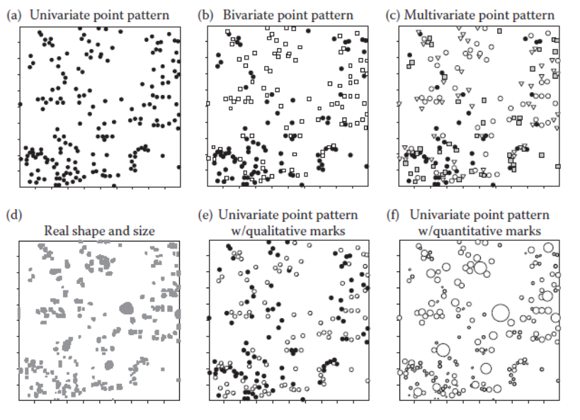
Ref: [7], page 12, Figure 2.1
Displaced amacrine cells in the retina of a rabbit: analysis of a bivariate spatial point pattern by Peter J. Diggle (1986)
A data set consisting of the locations of “light-on” and “light-off” displaced amacrine cells in the retina of a rabbit. The two cell types, labelled ‘on’ and ‘off’, are distinguished by their response to visual stimuli. Cells of the same type are evenly spaced, indicating a regular point pattern. A natural question is whether the spatial distributions of the two cell types are independent, or whether they influenced each other’s development.
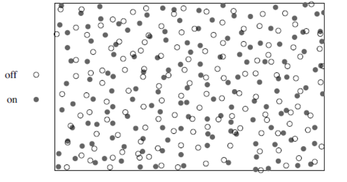
Ref: [3], page: 5, Figure 1.5
Spatial Point Pattern Types – (g) Point Networks
So far we looked at points in space but remember earlier I showed an example of public electricity lighting.
Here you can see the events (electricity lighting) are located on an actual network, ie. road network, rather than space.
So we cannot use straight lines to calculate the distances but we need to use a network distance.
What is the research question here?
Why do we analyse these point patterns? There are two research questions we are interested to answer:
Is the pattern random or structured in a way? (exploratory SPP):
Completely spatially random
Clustered pattern
Regular pattern
What is the process that might have generated this pattern? Covariates etc. (Inferential SPP)
We will deal with univariate patterns to start with and in the case of trees and forests, the research question is whether the forest density depends on the terrain, elevation and whether, after accounting for the influence of covariates, there is evidence of spatial clustering of the trees.
Univariate point patterns
Exploratory analysis - Intensity
The intensity of a point pattern measures how many events occur, on average, within a given unit of area. It is one of the most important descriptive characteristics of a point process and is typically the first property investigated during spatial point pattern analysis. Intensity is analogous to the mean of a numerical dataset, providing a measure of the average occurrence of events in space. Since it can be estimated with relatively few modelling assumptions, it serves as a useful starting point for understanding the overall spatial distribution before investigating higher-order properties such as clustering or interaction between events.
Click here for the difference between density and intensity
Density describes what you observed in your dataset (events per unit area). Intensity describes the underlying point process that generated those observations. In practice, the observed density is used to estimate the process intensity. Consequently, the terms are often used interchangeably in introductory point pattern analysis, although intensity is the preferred statistical term.
Summary statistics are used to describe the main characteristics of a point pattern. They provide information about the average behaviour of the spatial process, such as the overall intensity or degree of clustering, as well as the variation around this average. By comparing the observed summary statistics with those expected under an appropriate null model (for example, Complete Spatial Randomness), we can determine whether the observed spatial pattern is likely to have arisen by chance or whether it exhibits significant clustering, regularity, or other forms of spatial structure.
Intensity - Homogeneous
Figure 6.1: Examples of approximately homogeneous point patterns. Although the events may exhibit clustering or regular spacing, the overall intensity remains relatively constant across the study region.
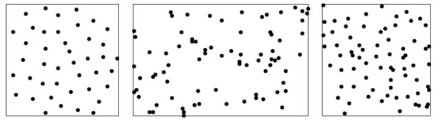
::: {.content-visible when-format=“pdf”}
Classic point pattern datasets with (roughly) homogeneous intensity. Left: biological cell centres in histological section [572, 575]. Middle: trees in a New Zealand forest, excluding a five-foot border [441, 575]. Right: Swedish Pine saplings [642, 572]. :::
Intensity - Inhomogeneous
Figure 6.2. Examples of inhomogeneous point patterns. Here the event intensity varies across the study area because of underlying environmental, biological, or geological processes. Before analysing clustering or interaction, this spatial variation in intensity should be accounted for.
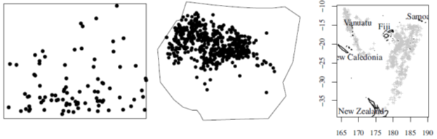
Intensity
A point pattern is an observed realisation of an underlying spatial point process. The process is characterised by its intensity, denoted by \(\lambda\), which represents the expected number of events per unit area. Because the true intensity is unknown, it is estimated from the observed point pattern.
The simplest estimator of the intensity is
\[
\hat{\lambda} = \frac{n(X)}{|A|},
\]
where
\(n(X)\) is the total number of observed events in the study region,
\(|A|\) is the area of the observation window.
The estimate \(\hat{\lambda}\) is simply the observed density (events per unit area) and is an unbiased estimator of the true process intensity \(\lambda\).
Units of Intensity
The value of the intensity depends on the units used to measure the study region. For example,
25 events per km\(^2\),
0.25 events per hectare,
0.000025 events per m\(^2\).
It is therefore important to always report the units associated with the study area.
Defining the Observation Window
The estimated intensity depends directly on the area of the observation window. Choosing an appropriate study region is therefore an important part of point pattern analysis.
Historically, many theoretical examples assumed that the observation window was rescaled to a unit square to simplify mathematical derivations. While useful for understanding the underlying concepts, this assumption is rarely realistic for applied studies.
Modern GIS software allows the observation window to be defined in several ways, including:
the actual study area boundary (e.g., an administrative region or nature reserve),
a rectangular bounding box surrounding the data,
a convex hull that encloses all observed points (fitting around the points tightly),
another polygon representing the area within which events could have occurred.
The observation window should represent the region in which events were able to occur and be observed, rather than simply the area occupied by the observed points.
Intensity Example 1: swedishpines data – Bounding Box (Rectangular)
We are going to look at the swedishpines dataset from spatstat package. We count the number of pine trees: 71 points.
R code
data(swedishpines)class(swedishpines)
[1] "ppp"
This indicates that this is a planar point pattern (ppp).
R code
swedishpines
Planar point pattern: 71 points
window: rectangle = [0, 96] x [0, 100] units (one unit = 0.1 metres)
R code
Window(swedishpines)
window: rectangle = [0, 96] x [0, 100] units (one unit = 0.1 metres)
Clearly the area here is \((96-0)*(100-0) = 9600\) units sq. Since 1 unit is 0.1 metres, then the area is 96 metre square. \(\lambda=71/96=0.7396\) points (trees) per metre square.
R code
intensity(spatstat.geom::rescale(swedishpines))
[1] 0.7395833
Intensity Example 2: clinics in CT 2016 - Bounding Polygon (Irregular )
We count the number of clinics
Calculate the area of City of CT: (search on google) 2445km-square
\(\lambda=149/2445=0.0609407\)
Now this is based on irregular bounding polygon. We could use a regular bounding box, such as a rectangle.
Intensity under different polygons and bounding box measures
The intensity is very sensitive so as to what bounding box or polygon you use.
Try this for the clinics dataset.
Properties of CSR
Question 1) Is the pattern random or structured in a way? (exploratory SPP)
Do the spatial locations appear completely spatially random? Are the locations homogeneously distributed in the specified area? Or are they clustered?
Complete Spatial Randomness (homogeneous Poisson process), Regularity and Clustering
Spatial point patterns can be
completely random
regular
clustered
The standard against which spatial point patterns are often compared is a completely spatially random (CSR) point process which is sometimes called homogeneous Poisson process.
We can do some plots and observe the pattern however usually we need some quantification since looking at plots may be different from eye to eye.
Throughout these notes, the following notation will be used:
Symbol
Description
\(A\)
The observation window (study region) in which the point pattern is observed.
\(a_j\)
The \(j\)th subregion (or quadrat), where \(j = 1,\ldots,m\).
\(m\)
The total number of quadrats into which the study region is divided.
\(|A|\)
The area of the observation window, measured in square units.
\(|a_j|\)
The area of the \(j\)th quadrat. If all quadrats are of equal size, then \(|a_j| = |A|/m\).
\(n(X)\)
The total number of observed events (points) within the observation window \(A\).
\(\lambda\)
The true intensity of the underlying point process, defined as the expected number of events per unit area.
\(\hat{\lambda}\)
The estimated intensity of the point pattern, given by:
\[
\hat{\lambda} = \frac{n(X)}{|A|}.
\]
Under a homogeneous Poisson process, \(\hat{\lambda}\) is both the maximum likelihood estimator and an unbiased estimator of the true intensity \(\lambda\).
In quadrat-based analyses, the expected number of events in each quadrat is
\[
E[n(a_j)] = \lambda |a_j|,
\]
where \(n(a_j)\) denotes the number of points observed in quadrat \(a_j\).
Complete Spatial Randomness (CSR)
A point pattern is said to satisfy Complete Spatial Randomness (CSR) if two conditions hold:
The number of events in any region follows a Poisson distribution.
For a quadrat \(a_j\) with area \(|a_j|\), the number of observed events,
\[
n(a_j),
\]
follows a Poisson distribution with mean
\[
\lambda |a_j|,
\]
where \(\lambda\) is the intensity of the point process. In practice, the intensity is estimated by
\[
\hat{\lambda} = \frac{n(X)}{|A|},
\]
so the expected number of events in quadrat \(a_j\) is
\[
E[n(a_j)] = \hat{\lambda}|a_j|.
\]
Events are independently and uniformly distributed.
Conditional on observing \(n\) events within a region, the locations of those events are independent of one another and are equally likely to occur anywhere within the observation window.
Together, these two assumptions imply that the point pattern exhibits no clustering, regularity, or directional preference beyond what would be expected by chance.
Methods for Assessing CSR
Several statistical methods can be used to determine whether an observed point pattern departs from Complete Spatial Randomness.
First-order methods
These methods describe variation in the intensity of the point pattern.
Intensity estimation – estimates the average number of events per unit area and identifies whether the process is homogeneous or inhomogeneous.
Quadrat count analysis – divides the study region into equal-sized quadrats and compares the observed and expected number of events using a chi-square test.
Scan statistics – searches for localised clusters of unusually high or low event intensity. Common approaches include:
Kulldorff’s spatial scan statistic,
STAC (Spatial and Temporal Analysis of Crime),
Generalised Additive Models (GAMs) for estimating spatial intensity surfaces.
Distance-based methods
These methods investigate the spacing between events.
Nearest-neighbour (\(G\)) function – analyses the distribution of distances from each event to its nearest neighbouring event.
Empty-space (\(F\)) function – analyses the distribution of distances from randomly selected locations to the nearest observed event.
Second-order methods
Second-order statistics examine the dependence between events over a range of spatial scales.
Examples include:
Ripley’s \(K\) function,
the pair correlation function \(g(r)\),
Besag’s \(L\) function.
These methods are used to determine whether events are clustered, randomly distributed, or regularly spaced at different distances.
Quadrat Counting and Tests
Quadrat Counting - Poisson Process
Quadrat Count Analysis
When the intensity of a point pattern is suspected to vary across the study region, it can be estimated non-parametrically using methods such as quadrat counting or kernel density estimation. Quadrat counting provides a simple way to assess whether the observed pattern is consistent with Complete Spatial Randomness (CSR).
The basic procedure is as follows:
Divide the observation window \(A\) into \(m\) subregions (quadrats),
\[
a_1, a_2, \ldots, a_m,
\]
typically of equal area.
Count the number of events in each quadrat,
\[
n_j = n(X \cap a_j), \qquad j = 1,\ldots,m,
\]
where \(n_j\) is the number of observed events in quadrat \(a_j\).
Calculate the average number of events per quadrat,
\[
\lambda_m = \frac{n(X)}{m},
\]
assuming that all quadrats have equal area.
Under the assumption of Complete Spatial Randomness (CSR), the number of events in each quadrat follows a Poisson distribution. The probability of observing exactly \(k\) events in a quadrat is therefore
where \(\lambda_m\) is the expected number of events per quadrat.
The observed frequencies of quadrats containing \(0, 1, 2, \ldots\) events are then compared with the expected frequencies under the Poisson distribution, typically using a chi-square goodness-of-fit test.
A significant difference between the observed and expected frequencies suggests that the point pattern departs from Complete Spatial Randomness. Such departures may indicate clustering, regular spacing, or spatial variation in intensity.
Suppose a point pattern contains \(n=100\) events and the observation window is divided into \(m=100\) equal-sized quadrats. The estimated mean number of events per quadrat is
library(spatstat.geom)library(spatstat.random)library(dplyr)library(knitr)library(ggplot2)# Number of events and quadratsn_events <-npoints(pp_csr)m_quadrats <-length(Q10x10_csr)# Mean number of events per quadratlambda_m <- n_events / m_quadratslambda_m
The probability of observing exactly three events in a quadrat is
\[
P(N=3)
=
\frac{1^3e^{-1}}{3!}
=
0.0613.
\]
Therefore, under CSR, approximately 6.13% of the quadrats are expected to contain exactly three events.
[1] 0.06131324
Quadrat Counting - Chi-Square Test
When the intensity of a point pattern is suspected to vary across the study region, it can be explored using non-parametric methods such as quadrat counting or kernel density estimation. Quadrat counting provides a simple way to compare the observed distribution of events with that expected under Complete Spatial Randomness (CSR).
The quadrat count procedure consists of the following steps:
Partition the observation window \(A\) into \(m\) subregions (quadrats),
\[
a_1, a_2, \ldots, a_m,
\]
typically of equal area.
Count the number of events in each quadrat,
\[
n_j = n(X \cap a_j),
\qquad
j = 1,\ldots,m,
\]
where \(n_j\) is the number of observed events in quadrat \(a_j\).
Compute the expected number of events in each quadrat,
\[
e_j = \hat{\lambda}|a_j|,
\]
where
\[
\hat{\lambda}=\frac{n(X)}{|A|}
\]
is the estimated intensity of the point process.
Compare the observed and expected counts using Pearson’s chi-square goodness-of-fit statistic,
Under the null hypothesis of Complete Spatial Randomness, the test statistic approximately follows a chi-square distribution,
\[
\chi^2
\sim
\chi^2_{m-1},
\]
where \(m-1\) is the number of degrees of freedom. (Degrees of freedom is actually the number of categories − 1 − number of estimated parameters. So when the intensity is estimated from the data (as it usually is), the asymptotic degrees of freedom are often taken as m−2.)
A large value of the chi-square statistic indicates that the observed quadrat counts differ substantially from those expected under CSR, suggesting that the point pattern is not completely spatially random. Such departures may arise from clustering, regular spacing, or spatial variation in intensity.
Quadrat counting – Observed point counts (\(n_j\))
Here -0.32 is the Pearson residual obtained with the formula:
\[
r_j =\frac{n_j-e_j}{\sqrt{e_j}}
\] Large positive residuals indicate more points than expected, while large negative residuals indicate fewer points than expected.
R code
tS <-quadrat.test(swp, 3,3)tS
Chi-squared test of CSR using quadrat counts
data: swp
X2 = 4.6761, df = 8, p-value = 0.4169
alternative hypothesis: two.sided
Quadrats: 3 by 3 grid of tiles
Decision???
Inspecting the p-value, we see that the test does not reject the null hypothesis of CSR for the Swedish Pines data.
A few things to consider?
Some issues with Quadrat Methods
Effect of Quadrat Size:
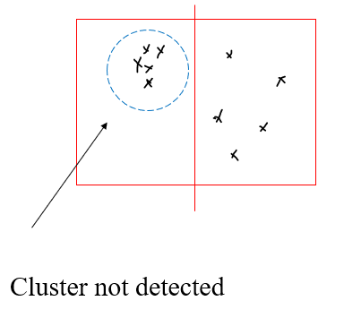
Click to learn more about quadrat size
Choice of quadrat size.
A key limitation of quadrat counting is that the number and size of quadrats are chosen arbitrarily. When the null hypothesis is rejected, the test only indicates that the observed point pattern is inconsistent with a homogeneous Poisson process. However, it does not reveal the reason for the departure. The pattern may exhibit spatially varying intensity (inhomogeneity), dependence between points (such as clustering or inhibition), or a combination of both. Consequently, the test provides little insight into the specific nature of the deviation from the null hypothesis.
The choice of quadrat size is therefore important. Quadrats should be large enough to capture meaningful spatial variation, but not so large that local patterns are averaged out. As illustrated in the figure, using very large quadrats may mask existing spatial patterns, causing the test to fail to detect departures from complete spatial randomness. Conversely, if quadrats are too small, many will contain only zero or one event, resulting in little variation among counts and reducing the power of the test.
In practice, it is common to repeat the analysis using several quadrat sizes to determine whether patterns emerge at different spatial scales. This sensitivity to the choice of zoning and scale means that quadrat counting is affected by the Modifiable Areal Unit Problem (MAUP). The next section introduces kernel density estimation, a density-based approach that is generally less sensitive to MAUP and provides a more flexible way to explore spatial point patterns.
Global vs Local Measures
Global statistics: Intensity
Local statistics: Quadrat intensity
Inhomogeneous Poisson Process (IPP)
In many real-world applications, assuming that a point process is homogeneous is unrealistic. For example, the spatial distribution of a city’s population is influenced by factors such as housing type, land use, neighbourhood characteristics, and accessibility. Similarly, the locations of trees in a forest depend on environmental conditions, including soil quality, moisture, elevation, slope, and sunlight. These factors cause the density of events to vary across space.
The Inhomogeneous Poisson Process (IPP) generalises the Homogeneous Poisson Process (HPP) by allowing the intensity to vary spatially. The assumption that events occur independently is retained, but the event rate is no longer constant. Instead, the intensity is represented by the spatially varying function
\[
\lambda(\mathbf{x}),
\]
which gives the expected number of events per unit area at location \(\mathbf{x}\). Regions with higher values of \(\lambda(\mathbf{x})\) are more likely to contain events than regions with lower values, reflecting the underlying spatial heterogeneity.
Estimation of Intensity for IPP
The intensity function of an Inhomogeneous Poisson Process (IPP) can be estimated using either non-parametric or parametric methods.
Non-parametric estimation makes minimal assumptions about the underlying intensity function and estimates it directly from the observed point pattern. A common approach is kernel smoothing, which produces a smooth estimate of the spatial intensity surface.
Parametric estimation assumes that the intensity follows a specified functional form,
\[
\lambda(\mathbf{x}; \boldsymbol{\theta}),
\]
where \(\boldsymbol{\theta}\) is a vector of unknown parameters. These parameters are typically estimated by maximum likelihood, yielding the intensity function that best explains the observed point pattern under the assumed model.
Estimating the Intensity of an IPP: Kernel Smoothing
A widely used non-parametric estimator of the intensity function is the kernel smoothing estimator:
\(k(\cdot)\) is a bivariate, symmetric kernel function, such as the uniform, Epanechnikov (parabolic), biweight (quartic), or Gaussian kernel.
\(\mathbf{x}_1,\mathbf{x}_2,\ldots,\mathbf{x}_n\) are the observed event locations.
\(h>0\) is the bandwidth, which controls the amount of smoothing:
Small values of \(h\) produce a highly detailed (peaky) intensity estimate that may capture random noise.
Large values of \(h\) produce a smoother intensity surface, but may hide important local features.
\(q(\mathbf{x})\) is the border correction factor.
Border correction
Near the boundary of the study region, part of the kernel extends outside the observation window, where no data have been observed. As a result, points close to the edge receive less kernel weight than points in the interior, causing the estimated intensity to be biased downwards near the borders.
The border correction factor \(q(\mathbf{x})\) compensates for this loss of kernel mass by rescaling the kernel contribution according to the proportion of the kernel that lies inside the study region. Consequently, locations near the boundary are not systematically underestimated.
Without border correction, the estimated intensity often appears artificially lower around the edges of the study area, even when the underlying process is homogeneous.
regular <-read.csv("C:/Users/01438475/OneDrive - University of Cape Town/ASDA/regular.csv")xy_regular <-matrix(cbind(regular$X,regular$Y), ncol=2)pp_regular <-as.ppp(xy_regular, c(0,1,0,1))plot(pp_regular)
Cluster Data Points
R code
cluster <-read.csv("C:/Users/01438475/OneDrive - University of Cape Town/ASDA/cluster.csv")xy_cluster <-matrix(cbind(cluster$X,cluster$Y), ncol=2)pp_cluster <-as.ppp(xy_cluster, c(0,1,0,1))plot(pp_cluster)
sigma = 0.1
R code
den <-density(pp_csr, sigma = .1) # here you can specify a different kernel and a bandwidthplot(den, main ="CSR") plot(pp_csr, add=TRUE)contour(den, add=TRUE)
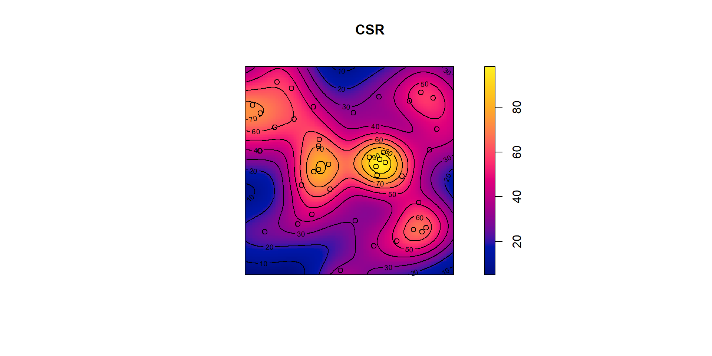
sigma = 0.2
R code
den <-density(pp_csr, sigma = .2) # here you can specify a different kernel and a bandwidthplot(den, main ="CSR") plot(pp_csr, add=TRUE)contour(den, add=TRUE)
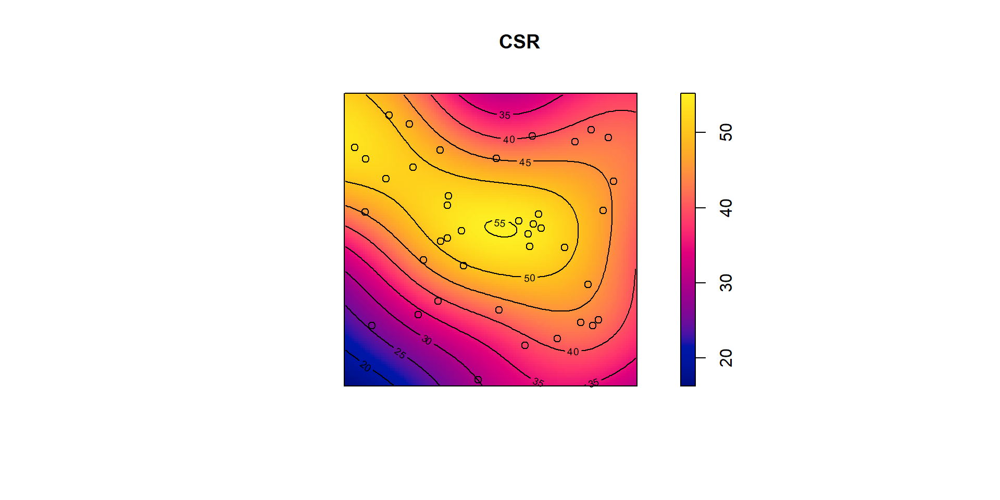
sigma = 0.3
R code
den <-density(pp_csr, sigma = .3) # here you can specify a different kernel and a bandwidthplot(den, main ="CSR") plot(pp_csr, add=TRUE)contour(den, add=TRUE)
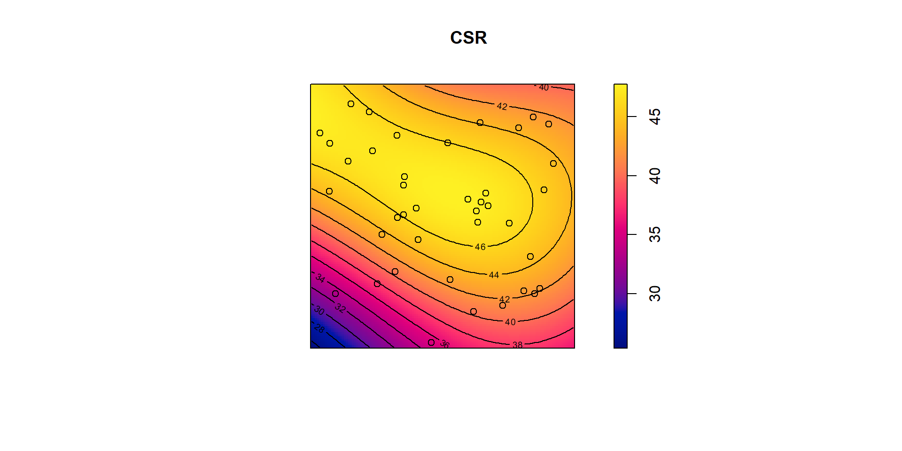
If you don’t specify a sigma, bandwidth, R spatstat default is to take sigma equal to one-eighth of the shortest side length of the enclosing rectangle. This is a very rough rule of thumb which may be unsatisfactory in many cases.
Several algorithms are available for automatically selecting the bandwidth sigma by minimising a measure of error. They include bw.diggle for Diggle and Berman’s [222, 89] mean square error cross-validation method and bw.ppl for the likelihood cross-validation method [428, Sect. 5.3]. If you type bw. In R you will see there are many other bandwidth calculation methods.
There are many other things that we could talk about but we are not going to touch: Weighted Kernel estimators Spatially adaptive smoothing etc.
Kernel density in existence of a covariate
Often we want to know how the intensity of points depends on the values of a covariate.
For example, it is of interest to determine whether the trees prefer steep or flat terrain, and whether they prefer a particular altitude.
Other applications include spatial epidemiology (e.g., disease risk as a function of environmental exposure), the density of clinics in CT can be adjusted by the population in CT. spatial ecology (e.g., habitat preferences of organisms),
Animal sightings might be due to a water point, or dense tree areas exploration geology (e.g., prospectivity of mineral deposits predicted from survey data), and seismology.
In this case we could adjust our kernel density by the covariate.
For example, the density of a disease occurrence can be adjusted by the population etc.
Kernel density in existence of a covariate
Investigating dependence of intensity on a covariate
Quadrats determined by a covariate
Relative distribution estimate
Distance map
Tests of dependence on a covariate Hotspots, clusters and local features Kernel smoothing of marks
Spatial Covariates
A spatial covariate is a variable whose value depends on spatial location. It can be represented as a function
\[
Z(\mathbf{u}),
\]
where \(\mathbf{u}\) denotes a location in the study region.
Examples of spatial covariates include:
Geographical coordinates (e.g., longitude and latitude)
Terrain elevation
Soil pH
Soil moisture
Land cover or vegetation type
Distance from a location \(\mathbf{u}\) to another spatial feature (e.g., a road, river, coastline, or city centre)
Spatial covariates may also be derived from other spatial datasets, such as:
Another point pattern (e.g., distance to the nearest hospital or school)
A line pattern (e.g., roads or rivers)
An areal dataset (e.g., census regions or land-use polygons)
A continuous raster surface (e.g., elevation or temperature)
For an inhomogeneous point process, the primary objective is often to determine whether the intensity of the point pattern depends on one or more spatial covariates. This relationship can be expressed as
In practice, we typically model and account for the effects of spatial covariates before investigating dependence between points. This is because an apparent clustering pattern may simply reflect variation in environmental or geographical conditions rather than interaction between events.
Example data: “bei”
The dataset bei gives the positions of 3605 trees of the species Beilschmiedia pendula(Lauraceae) in a 1000 by 500 metre rectangular sampling region in the tropical rainforest of Barro Colorado Island.
The accompanying datase bei.extragives information about the altitude (elevation) in the study region.
These data are part of a much larger dataset containing the positions of hundreds of thousands of trees belong to thousands of species.
In quadrat counting, the study region can be partitioned into any collection of non-overlapping subregions. The quadrats do not have to be rectangular or have equal areas; they may be of any shape, provided they collectively cover the study region.
Rather than choosing quadrats arbitrarily, it is often more informative to define them using spatial covariate information. For example, if elevation is believed to influence the occurrence of events, the study region can be divided into zones of similar elevation.
Suppose the study region is classified into four elevation categories:
Low
Medium-Low
Medium-High
High
Each category defines a quadrat, and the observed number of events within each elevation zone can be compared with the number expected under an appropriate model.
This approach allows us to investigate whether the intensity of the point process varies systematically with the covariate. For example, if trees are found predominantly in high-elevation regions, the observed counts in those quadrats will be larger than expected under a homogeneous Poisson process.
Because the quadrats are defined according to the covariate rather than by an arbitrary grid, the resulting analysis is often more meaningful and directly addresses the scientific question of interest.
Example: For the tropical rainforest dataset (bei in spatstat), the study region can be partitioned into elevation classes (Low, Medium-Low, Medium-High, and High). Quadrat counts can then be compared across these elevation zones to assess whether tree intensity depends on terrain elevation.
Tropical rain forest trees dataset
R code
data("bei")
Assign the elevation covariate to a variable elev by typing
R code
elev <- bei.extra$elev
Plot the trees on top of an image of the elevation covariate.
For the tropical rainforest data bei, it might be useful to split the study region into several sub-regions according to the terrain elevation:
R code
b <-quantile(elev, probs=(0:4)/4, type=2)Zcut <-cut(elev, breaks=b, labels=c("Low", "Med-Low", "Med-High", "High"))textureplot(Zcut, main ="")
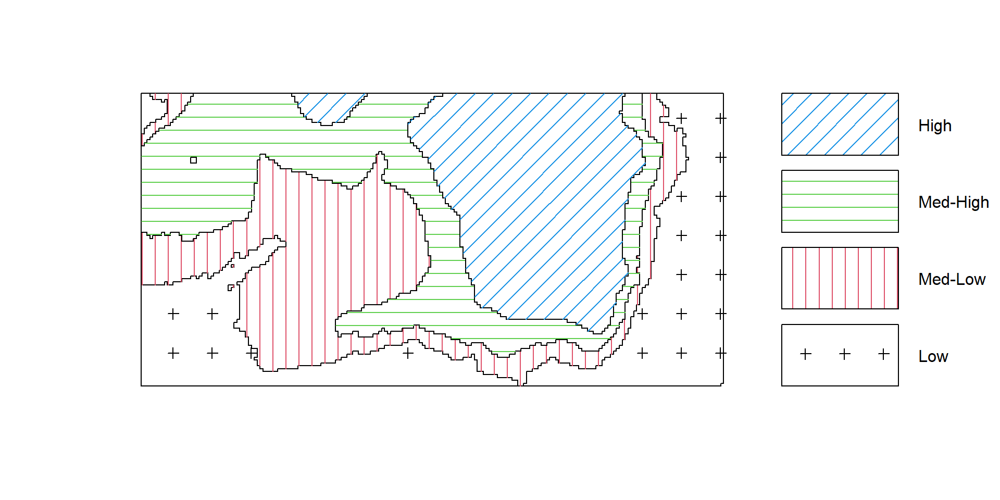
Convert the image from above to a tesselation, count the number of points in each region using quadratcount, and plot the quadrat counts.
R code
V <-tess(image=Zcut)qc <-quadratcount(bei, tess = V)qc
tile
Low Med-Low Med-High High
714 883 1344 663
The output shows the number of trees in each region. Since the four regions have equal area, the counts should be approximately equal if there is a uniform density of trees. Obviously they are not equal; there appears to be a strong preference for higher elevations (dropping off for the highest elevations).
Estimate the intensity in each of the four regions.
R code
intensity(qc)
tile
Low Med-Low Med-High High
0.005623154 0.006960978 0.010593103 0.005228707
Assume that the intensity of trees is a function ((u) = (e(u))) where (e(u)) is the terrain elevation at location u.
Compute a nonparametric estimate of the function () and plot it by
R code
rh <-rhohat(bei, elev)plot(rh)
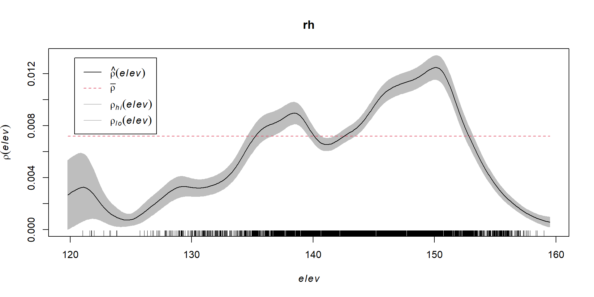
Compute the predicted intensity based on this estimate of ().
Which seems to be quite different from the predicted intensity.
The difference of estimates at corresponding pixels can be plotted as an image using plot(eval.im(kden - pred)); the difference should be roughly equal to 0 everwhere.
For the Beilschmiedia data with terrain elevation as the covariate, these graphics suggest that (6.18) is a reasonable approximation.
By contrast, a similar exercise performed for the terrain slope covariate suggests that forest density is not simply a function of terrain slope.